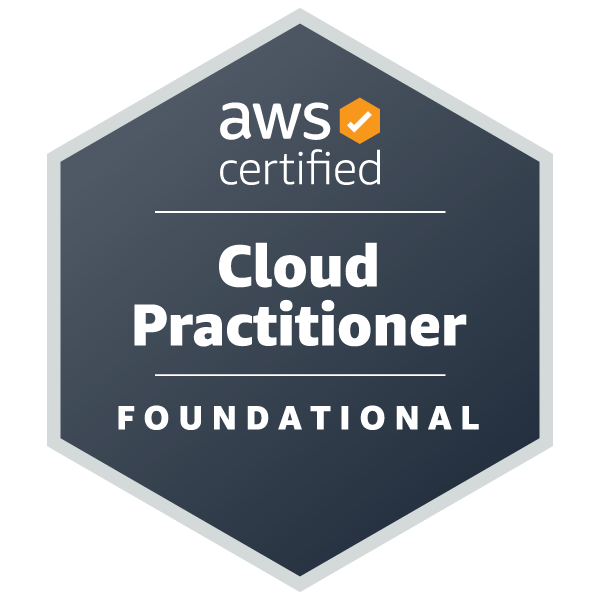
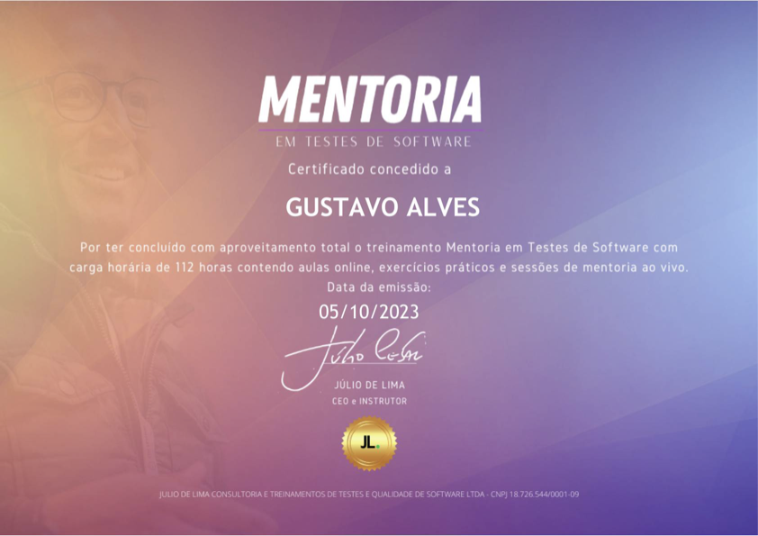

Gustavo Alves.
Implemento cultura de qualidade dentro de squads de tecnologia — da automação de testes regressivos e funcionais à disseminação da disciplina de testes na jornada de desenvolvimento. Hoje atuo no Itaú, na Comunidade de Custódia de Ativos PF.

02. Sobre mim
Atuo como Analista de Engenharia de TI no Itaú, na Comunidade de Custódia de Ativos PF, onde sou responsável por implementar e provocar conceitos de qualidade dentro dos squads — participando de refinamentos, inceptions e discovery, e agregando soluções com viés de qualidade e automação.
Meu foco é produtizar automação para testes regressivos, funcionais e integrados, disseminando a disciplina de testes na jornada dos desenvolvedores.
03. Minha abordagem
Qualidade construída em comunidade
Qualidade não é responsabilidade de uma pessoa ou etapa — é construída em comunidade. Realizo validações em camadas técnicas (Front-end, Back-end/API, nuvem e mensageria, banco de dados e infraestrutura), mas antes de validar o código, questiono a regra de negócio: testar algo que não faz sentido não gera qualidade real. Uso o Test Pyramid para equilibrar esforço entre os tipos de teste, e o Shift Left para antecipar essas discussões desde o início do ciclo.
04. Experiência
Analista de Engenharia de TI Jr.
Implemento e disseminado conceitos de qualidade dentro dos squads da Comunidade de Custódia de Ativos PF — participando de refinamentos, inceptions e discovery, e produtizando automação para testes regressivos, funcionais e integrados.
Analista de QA (PJ)
Qualidade de software ponta a ponta, com foco em automação de testes e melhoria contínua dos processos de teste.
Analista de QA (CLT)
Automação de testes Web, API, Mobile e banco de dados para projetos de clientes como Claro e Bradesco, atuando em times ágeis (Scrum/BDD) e cascata.
05. Produtos de qualidade
Pré-CAB
Realizo a mitigação de risco de mudança, com foco em qualidade de repositórios — validando testes de mutação, testes unitários, testes integrados e evidências de teste e plano de rollback antes da submissão ao CAB.
Farol
Monitoro e atualizo o Farol, suíte de testes regressivos que valida os serviços de pós-venda em ambiente de homologação.
Consultoria em testes de integração
Atuo como referência técnica para testes de integração através do TestStack, repositório que centraliza validações de serviços AWS, Redis, Kafka e API — orientando os desenvolvedores na construção e execução desses testes.
Pílula de Conhecimento
Disparo por e-mail, feito a cada sprint, que apresenta de forma leve e descontraída os produtos de qualidade do time.
06. Projetos anteriores
Claro — Salesforce (via Global Hitss)
Bradesco — Uras (via Global Hitss)
07. Skills
Linguagens
Automação Web / Mobile
API
Performance
Infra / Cloud
CI/CD & Ferramentas
Banco de Dados
Metodologias & IA
08. Certificações

AWS Certified Cloud Practitioner
Certificação oficial validando conhecimento em computação em nuvem, segurança e infraestrutura, servindo como base para a atuação diária com Athena, Glue e S3.

Mentoria em Testes de Software
Treinamento de 112 horas com aulas online, exercícios práticos e sessões de mentoria ao vivo — concluído em outubro de 2023.
Ministrada por Júlio de Lima, instrutor certificado (CTFL, CTAL Test Manager, CTAL Test Automation Engineer) e professor de pós-graduação, com atuação em conferências internacionais como STAREast (EUA) e CLEI (Panamá).
09. Contato
Vamos conversar?
Estou aberto a novas oportunidades — sinta-se à vontade para entrar em contato.